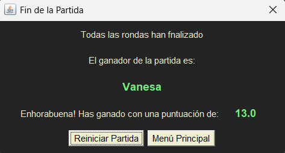

Partida en curso
Cada jugador realizará su turno en este tablero. Aquí deberá pulsar sobre el mazo para ir sacando las cartas. Encima del tablero se muestra el turno y el jugador activo. Pulsando sobre el botón Plantarse, el jugador finalizará su turno añadiendo el valor de las cartas que tenga en juego a los Puntos Ronda (abajo izquierda). Debajo del botón, el jugador tiene información sobre el valor actual de sus cartas en juego (Valor Ronda).
Si un jugador decide plantarse, se le informará de los puntos obtenidos. Si al sacar carta consigue Siete y Media, ganará 10 puntos. Si consigue Siete y Media Real, ganará 30 puntos (esta jugada únicamente se puede conseguir al sacar la segunda carta). Pulsando OK acabará su turno.
Si un jugador saca carta y el valor en juego sobrepasa el 7.5, se le informará y no ganará puntos. Pulsando OK acabará su turno.
Cuando todos los jugadores finalicen su turno, acabará la ronda con información sobre el ganador. Pulsando Siguiente Ronda comenzará la siguente ronda.
Cuando todas las rondas finalicen, acabará la partida con información sobre el ganador de la partida. Pulsando Menú Principal volverás al menú principal del juego.